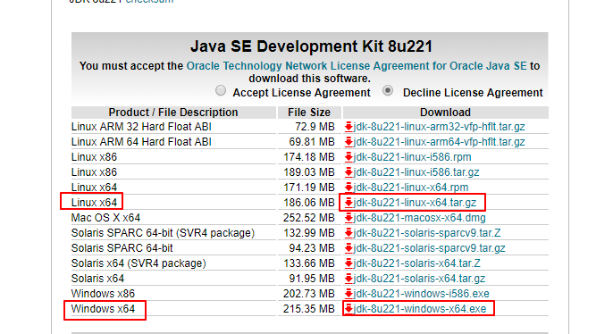
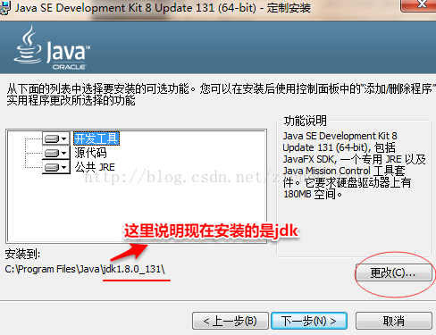
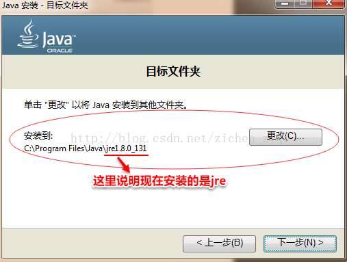

1、安装jdk
（1） 下载对应的jdk版本（注意要和eclipse版本相匹配）
这是下载jdk各个版本的地址：
这是jdk8的下载地址
如图：

（2）安装：
首先在安装软件的磁盘里新建文件夹Java，并在其文件夹下建立jdk和jre两个文件夹。我的Java路径是如图：

然后点击下载的jdk的.exe文件开始安装：
安装时没有什么要选的，直接下一步即可，只需注意的是有两个安装路径改一下：（安装分两步，系统会先安装jdk，再单独安装jre）
注:
因为在安装jdk时,在安装完jdk之后,接下来还会再问是否单独安装jre,这个jre其实不是给程序员用的,
给程序员用的jre其实已经在安装jdk时,就已经安装在了jdk的目录里, 那里有一个jdk的子目录
单独安装的那个jre目录其实是给不懂Java的用户使用的,他的目的是只要能运行Java代码即可,
这个jre是不包含程序调试之类的功能的。
而我们程序员自己使用的其实是安装jdk时的安装目录里的jre
1）jdk的安装路径该为刚刚新建的jdk的文件夹里

2）单独安装的jre的安装目录页放到刚刚新建的jre文件夹里(这里安装的就是给不懂编程的用户使用的jre)

安装完成后就不用管他了
（3）配置环境变量： 单击“计算机-属性-高级系统设置”，单击“环境变量”，到达配置环境处。（注意：是在系统变量处配置，不是在用户变量处配置）
1）新建“JAVA_HOME”环境变量，其值为jdk的安装路径，我这里是：F:\Java\jdk
方法如图所示：

2）新建“CLASSPATH”环境变量，其值为固定值，在哪都是一样的，不会改变（注意最前面有个点和分号）
.;%JAVA_HOME%\lib\dt.jar;%JAVA_HOME%\lib\tools.jar
新建方法和JAVA_HOME一样

3）编辑“Path”环境变量：（Path变量要新增的值也是固定不变的）
win10环境下需要在环境变量里选中“Path”，并选择“编辑”，再选择“新建”新增两行：
%JAVA_HOME%\bin
%JAVA_HOME%\jre\bin
并且句尾不能带 ；号（因为win10的环境变量都是系统自动按分号分隔好，并且一行一行显示在编辑窗口，所以我们添加是只需一个一个添加即可;
而win7是一整串的显示，所以要在Path环境变量末尾添加路径就只能写成 %JAVA_HOME%\bin;%JAVA_HOME%\jre\bin; 这种一行的形式，并且要带上分号，如果Path变量值末尾本身没有分号的话还要在添加这一行路径前先加一个分号）


2、安装eclipse
（1）下载：
这是安装eclipse的mars版本的地址
如图


（2）安装：
安装很简单，eclipse不需要安装，直接解压就可以运行，是一个绿色版的软件（当然现在最新版的eclipse页支持先下载一个.exe文件，然后直接在线安装，不过还是有那种直接解压运行的包）。为了方便管理可以将其解压到和jdk一起放在Java文件夹下。
（3）启动运行

第一次运行会询问将工作空间放在哪，我选择放在Java文件夹下，和jdk、eclipse放在同级目录，到时候方便找

修改一下编码形式：

改一下字体大小：
修改字体顺序如图所示，一般16号字体比较合适，也可以按照自己的喜好调整。

改一下jdk的路径：改到jdk目录下或者jre目录下皆可，因为他们\jre\bin目录下的文件导入到这里的是一样的，(最好是如图所示的样子,因为单独安装的jre目录并不是给程序员使用的,是给不懂开发的用户使用的,只有jdk目录下的\jre\bin才是真正为程序员准备的)但是记得把名字改为jre8，也就是jre+版本号，方便以后调用

三、附带一个创建好Java project后修改jdk或者说jre源的方法：


具体创建一个Java程序可参考：